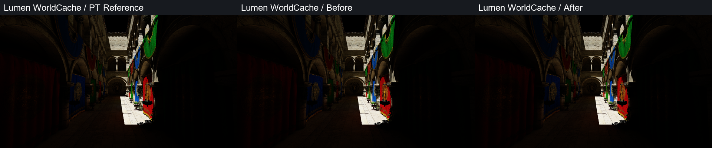
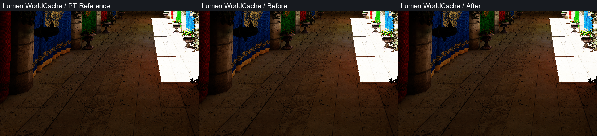
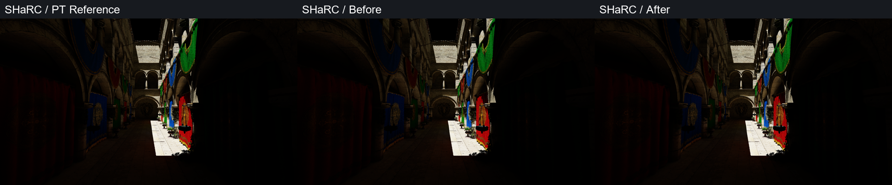
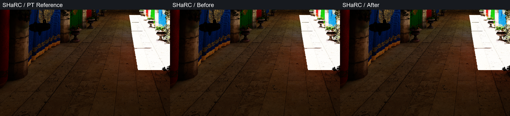
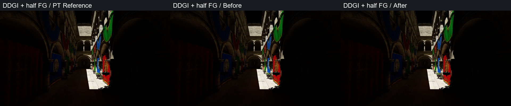
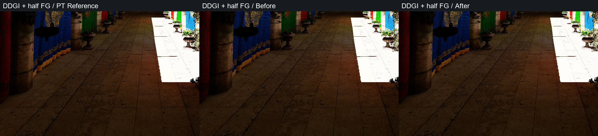

RTX 5070 / D3D12 Release，SponzaLambert，1920×1080，方向光强度 50。原图中的法线贴图、几何、材质和相机一致。比较的是线性 HDR 输出，使用同一曝光和显示变换。暗部定义为 PT luminance < 0.05 且法线有效；百分比是区域平均亮度比值，不是逐像素比值平均。
共用漫反射光照改用 BSDFProperties.guideNormal，并调用 Falcor 的反射半球有效性检查。WorldCache 和 SHaRC 的后续余弦采样使用同一最终法线及半球检查；SHaRC 从相机出发的第一个顶点对齐主表面法线修正策略。继续保留原来的 Lambert 漫反射近似与反照率权重，不把镜面 BRDF 写入缓存。WorldCache 第一根射线只负责缓存覆盖、不积累主表面 throughput，其提议分布保持不变。
缓存布局、法线键、格子尺寸、更新预算、历史、材质去调制、8 顶点上限、throughput 截断、俄罗斯轮盘和半分辨率重建均未修改。三个受测模式的前后属性逐项相同。光栅化和 multi-view 默认仍关闭。
| 方案 | 暗部偏差 | HDR RGB MSE ↓ | HDR-FLIP ↓ | 完整渲染图 GPU 时间 |
|---|---|---|---|---|
| Lumen WorldCache | +6.76% → +3.45% | 0.00010614347 → 0.0001051158 | 0.14286 → 0.12026 | 1.927 → 1.957 ms (+1.56%) |
| SHaRC | +5.28% → +3.25% | 7.5779427e-05 → 7.4563898e-05 | 0.13129 → 0.12153 | 2.149 → 2.247 ms (+4.55%) |
| DDGI + half FG | -1.67% → -2.45% | 7.4324962e-05 → 7.4775411e-05 | 0.17606 → 0.18333 | 4.581 → 4.660 ms (+1.73%) |
当前 PTReference（8 spp/帧）的完整图 GPU 时间为 173.027 ms；画质参考复用相同场景/相机的 65536 spp PT 图。8 spp 的单帧时间不代表参考图的生成总成本，也不代表与缓存方案同等画质。
版本顺序 A/B/B/A。每个模式每次先预热 2048 帧，再采集 512 帧 GPU 时间，剔除最初 4 条记录；每版本两次运行取均值，单次结果保存在 JSON。计时包含 GBuffer、缓存或探针更新、FG、重建、Accumulate 和显示，不含截图和 stats 回读。首轮 A/B 计时后重置屏幕累积，分别保存 4096/8192 帧截图。GBuffer 法线与 PT 参考逐像素一致；输出全部有限。
这是固定预算比较，不声称完全收敛。4096→8192 的变化记录在 summary.json；小幅画质/性能差异应结合采样误差与运行间波动判断。修复材质模型不保证所有近似 GI 的误差单调降低，缓存与重建仍有偏差。本轮未验证复杂镜面/透射材质或动态场景。

柱脚局部：三图统一额外 +2 EV。


柱脚局部：三图统一额外 +2 EV。


柱脚局部：三图统一额外 +2 EV。

先构建 Release RTXGIDDGI，准备 Sponza 场景资源。运行时关闭其他 Mogwai，不要同时构建 shader。脚本在输出目录中切换 shader 版本，结束时恢复当前修复源码，不改动源文件。
python tests/ddgi/run_material_normal_comparison.py python tests/ddgi/report_material_normal_fix.py --report # 可选：重新生成 65536 spp PT 参考；没有旧参考时自动生成。 python tests/ddgi/run_material_normal_comparison.py --generate-reference
分析依赖 numpy、OpenEXR、Pillow、matplotlib、flip_evaluator。完整原始输出写入 build/material-normal-fix，报告保存整理后的参数、测量值和对比图。